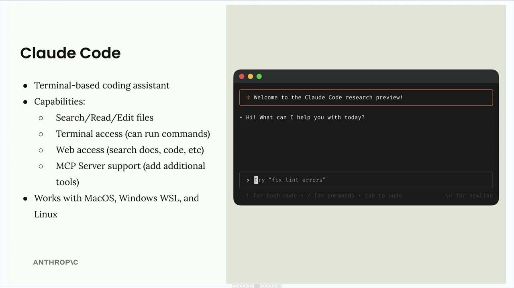
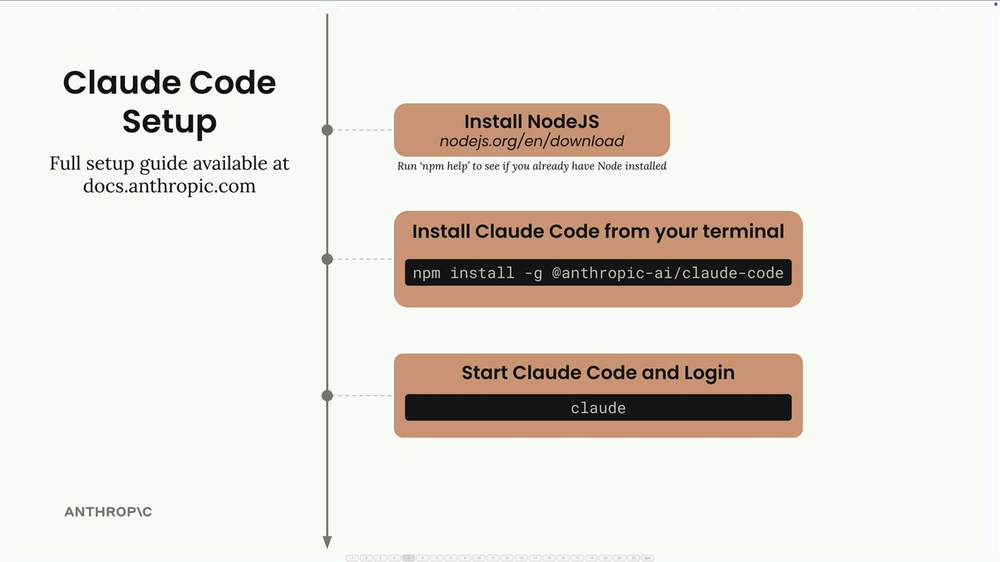

Установка Claude Code
Чему научитесь
Видео 1:33 и текст урока
К концу урока вы сможете:
- перечислить, какие инструменты есть у Claude Code;
- установить Claude Code и войти в аккаунт.
Видео и текст урока.
Смотреть урок на Skilljar Claude Code setup · 1:33Claude Code — помощник по программированию, который работает прямо в командной строке. Представьте, что Claude доступен у вас в терминале и готов помочь с любой задачей по коду, над которой вы работаете.

Try "fix lint errors".Что умеет Claude Code
У Claude Code есть полный набор инструментов для рабочего процесса разработки:
- Работа с файлами — поиск, чтение и редактирование файлов проекта;
- Доступ к терминалу — запуск команд прямо из разговора;
- Доступ к вебу — поиск документации, получение примеров кода и другое;
- Поддержка MCP-серверов — новые инструменты через подключение MCP-серверов.
Интеграция с MCP особенно сильна: расширять возможности Claude Code можно специализированными инструментами для баз данных, API и любых других сервисов, с которыми вы работаете.
Claude Code работает на macOS, Windows WSL и Linux, так что им можно пользоваться в любой среде разработки.
Установка

Чтобы установить Claude Code, достаточно трёх шагов:
- установите Node.js с
nodejs.org/en/download(проверить, есть ли он уже, можно командойnpm helpв терминале); - установите Claude Code командой
npm install -g @anthropic-ai/claude-code; - запустите и войдите в аккаунт: выполните
claudeв терминале.
При первом запуске команды claude она попросит войти в аккаунт Anthropic. Полное руководство по установке есть на docs.anthropic.com, если нужны подробности.
После установки Claude будет доступен прямо в терминале и готов помочь с любым проектом или задачей по коду.
Дальше
Следующий урок — Claude Code в работе: /init, CLAUDE.md и рабочие процессы «контекст → план → реализация».
Оригинал урока: Claude Code setup.